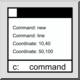

Dit is een automatische vertaling.
Werkbalk / icoon:

Menu: Aanzicht > Opdrachtregel
Sneltoets: G, M
Opdrachten: gm
Met de opdrachtregel van QCAD kunt u commando's starten, coördinaten invoeren of waarden zoals afstanden of radii invoeren.
Absolute coördinaten worden ingevoerd in het formaat "x,y"
40,5
Relatieve coördinaten worden ingevoerd in het formaat "@x,y"
@10,6
Absolute poolcoördinaten worden ingevoerd in het formaat "distance<angle"
10<30
Relatieve poolcoördinaten worden ingevoerd in het formaat "@distance<angle"
@10<45
Bij het invoeren van coördinaten of waarden kunnen wiskundige uitdrukkingenworden gebruikt om een coördinaat te berekenen op basis van bekende waarden. Zo kan bijvoorbeeld ook de coördinaat 10,5 als coördinaat worden ingevoerd
5+5,30/6
De opdrachtregel kan ook als rekenmachine worden gebruikt. Om dit te doen, voert u een wiskundige uitdrukkingin die met een gelijkheidsteken wordt weergegeven
=3+4
7
Variabelen kunnen worden gebruikt om waarden op te slaan
=a=5+6 11
=a/2 5,5
Wiskundige constanten zijn beschikbaar:
PI, LN2, LN10, LOG2E, LOG10E, SQRT1_2, SQRT2, SQRT2
Wiskundige functies zijn beschikbaar:
abs, plafond, vloer, exp, log, log, max, min, pow, sqrt, random, rond, rad2deg, deg2rad, ° sin, cos, tan, asin, acos, atan, atan2, atan2, log10, log1p, log2, log2, teken, cosh, sinh, tanh, acosh, asinh, atanh, expm1, hypot, cbrt, trunc
De meeste van deze constanten en functies zijn standaard ECMAScript (JavaScript) functies en zijn online gedocumenteerd. In de standaard ECMAScript maken deze functies deel uit van de wiskunde-klasse, zodat de functie abszou moeten worden geschreven als Math.abs. In de QCAD opdrachtregel kun je voor het gemak het Math.deel weglaten. Trigonometrische functies (zonde, cos, tan, asin, acos, atan, atan, atan2) aanvaarden of keren hoeken in graden terug. Als u de voorkeur geeft aan de radiaalversies van deze functies, gebruik dan in plaats daarvan de originele wiskundige functies van Math.
De functies rad2degen deg2radkunnen worden gebruikt om hoeken tussen radiaal en graden om te zetten.